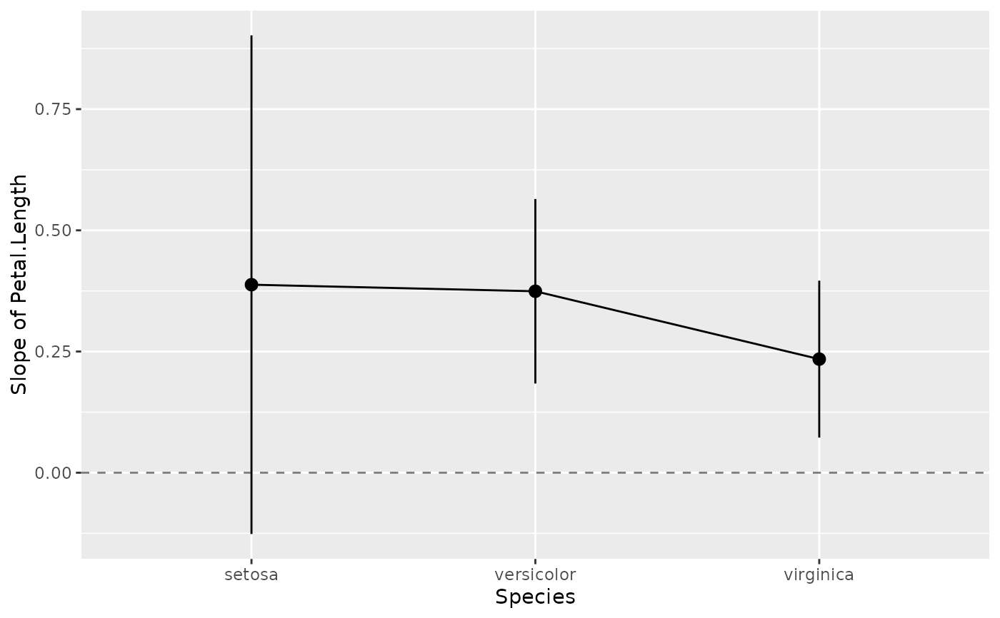
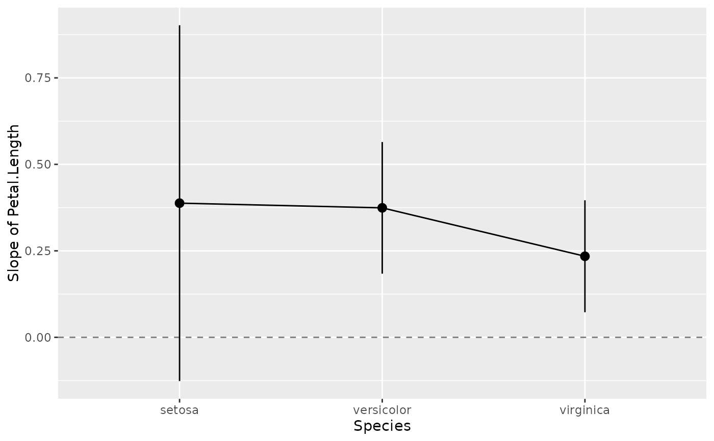
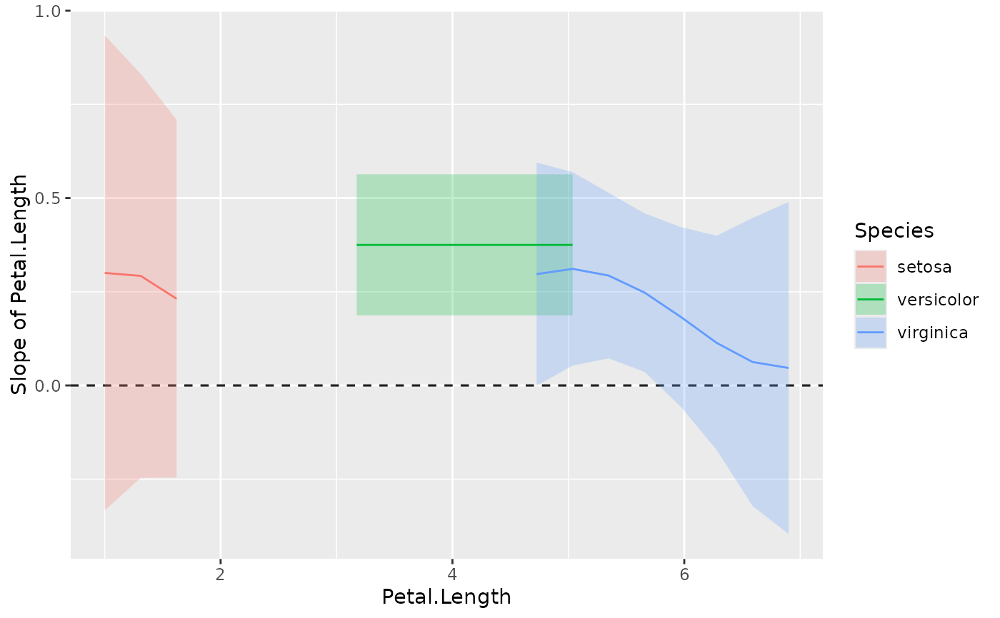
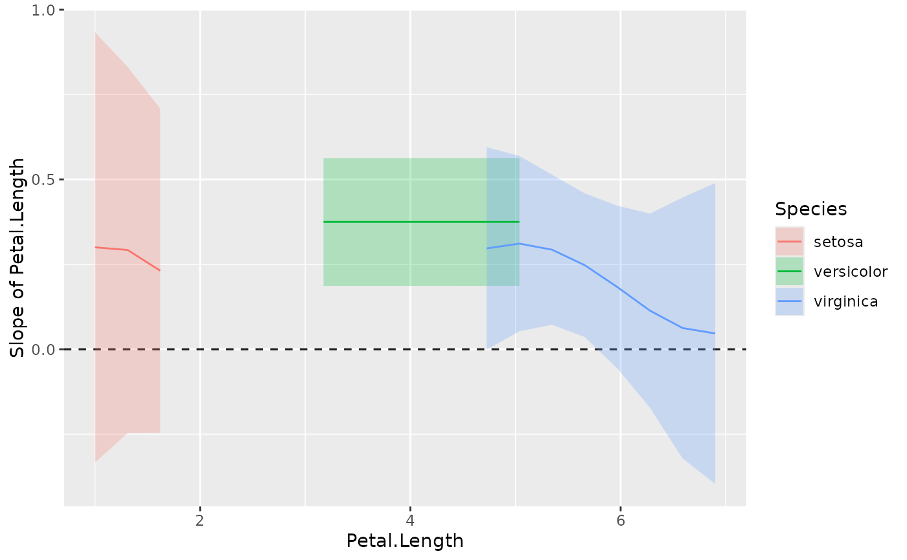

Estimate the slopes (i.e., the coefficient) of a predictor over or within different factor levels, or alongside a numeric variable. In other words, to assess the effect of a predictor at specific configurations data. It corresponds to the derivative and can be useful to understand where a predictor has a significant role when interactions or non-linear relationships are present.
Other related functions based on marginal estimations includes
estimate_contrasts() and estimate_means().
See the Details section below, and don't forget to also check out the Vignettes and README examples for various examples, tutorials and use cases.
Usage
estimate_slopes(
model,
trend = NULL,
by = NULL,
ci = 0.95,
p_adjust = "none",
transform = NULL,
keep_iterations = FALSE,
backend = getOption("modelbased_backend", "marginaleffects"),
verbose = TRUE,
...
)Arguments
- model
A statistical model.
- trend
A character indicating the name of the variable for which to compute the slopes.
- by
The (focal) predictor variable(s) at which to evaluate the desired effect / mean / contrasts. Other predictors of the model that are not included here will be collapsed and "averaged" over (the effect will be estimated across them).
bycan be a character (vector) naming the focal predictors, optionally including representative values or levels at which focal predictors are evaluated (e.g.,by="x=c(1,2)"). Whenestimateis not"average", thebyargument is used to create a "reference grid" or "data grid" with representative values for the focal predictors. In this case,bycan also be list of named elements. See details ininsight::get_datagrid()to learn more about how to create data grids for predictors of interest.- ci
Confidence Interval (CI) level. Default to
0.95(95%).- p_adjust
The p-values adjustment method for frequentist multiple comparisons. For
estimate_slopes(), multiple comparison only occurs for Johnson-Neyman intervals, i.e. in case of interactions with two numeric predictors (one specified intrend, one inby). In this case, the"esarey"option is recommended, butp_adjustcan also be one of"none"(default),"hochberg","hommel","bonferroni","BH","BY","fdr","tukey","sidak", or"holm".- transform
A function applied to predictions and confidence intervals to (back-) transform results, which can be useful in case the regression model has a transformed response variable (e.g.,
lm(log(y) ~ x)). For Bayesian models, this function is applied to individual draws from the posterior distribution, before computing summaries. Can also beTRUE, in which caseinsight::get_transformation()is called to determine the appropriate transformation-function. Note that no standard errors are returned when transformations are applied.- keep_iterations
If
TRUE, will keep all iterations (draws) of bootstrapped or Bayesian models. They will be added as additional columns namediter_1,iter_2, and so on. Ifkeep_iterationsis a positive number, only as many columns as indicated inkeep_iterationswill be added to the output. You can reshape them to a long format by runningbayestestR::reshape_iterations().- backend
Whether to use
"marginaleffects"or"emmeans"as a backend. Results are usually very similar. The major difference will be found for mixed models, wherebackend = "marginaleffects"will also average across random effects levels, producing "marginal predictions" (instead of "conditional predictions", see Heiss 2022).You can set a default backend via
options(), e.g. useoptions(modelbased_backend = "emmeans")to use the emmeans package oroptions(modelbased_backend = "marginaleffects")to set marginaleffects as default backend.- verbose
Use
FALSEto silence messages and warnings.- ...
Other arguments passed, for instance, to
insight::get_datagrid(), to functions from the emmeans or marginaleffects package, or to process Bayesian models viabayestestR::describe_posterior(). Examples:insight::get_datagrid(): Argument such aslength,digitsorrangecan be used to control the (number of) representative values.marginaleffects: Internally used functions are
avg_predictions()for means and contrasts, andavg_slope()for slopes. Therefore, arguments for instance likevcov,equivalence,df,slopeor evennewdatacan be passed to those functions. Aweightsargument is passed to thewtsargument inavg_predictions()oravg_slopes(), however, weights can only be applied whenestimateis"average"or"population"(i.e. for those marginalization options that do not use data grids). Other arguments, such asre.formorallow.new.levels, may be passed topredict()(which is internally used by marginaleffects) if supported by that model class.emmeans: Internally used functions are
emmeans()andemtrends(). Additional arguments can be passed to these functions.Bayesian models: For Bayesian models, parameters are cleaned using
describe_posterior(), thus, arguments like, for example,centrality,rope_range, ortestare passed to that function.
Details
The estimate_slopes(), estimate_means() and estimate_contrasts()
functions are forming a group, as they are all based on marginal
estimations (estimations based on a model). All three are built on the
emmeans or marginaleffects package (depending on the backend
argument), so reading its documentation (for instance emmeans::emmeans(),
emmeans::emtrends() or this website) is
recommended to understand the idea behind these types of procedures.
Model-based predictions is the basis for all that follows. Indeed, the first thing to understand is how models can be used to make predictions (see
estimate_link()). This corresponds to the predicted response (or "outcome variable") given specific predictor values of the predictors (i.e., given a specific data configuration). This is why the concept ofreference grid()is so important for direct predictions.Marginal "means", obtained via
estimate_means(), are an extension of such predictions, allowing to "average" (collapse) some of the predictors, to obtain the average response value at a specific predictors configuration. This is typically used when some of the predictors of interest are factors. Indeed, the parameters of the model will usually give you the intercept value and then the "effect" of each factor level (how different it is from the intercept). Marginal means can be used to directly give you the mean value of the response variable at all the levels of a factor. Moreover, it can also be used to control, or average over predictors, which is useful in the case of multiple predictors with or without interactions.Marginal contrasts, obtained via
estimate_contrasts(), are themselves at extension of marginal means, in that they allow to investigate the difference (i.e., the contrast) between the marginal means. This is, again, often used to get all pairwise differences between all levels of a factor. It works also for continuous predictors, for instance one could also be interested in whether the difference at two extremes of a continuous predictor is significant.Finally, marginal effects, obtained via
estimate_slopes(), are different in that their focus is not values on the response variable, but the model's parameters. The idea is to assess the effect of a predictor at a specific configuration of the other predictors. This is relevant in the case of interactions or non-linear relationships, when the effect of a predictor variable changes depending on the other predictors. Moreover, these effects can also be "averaged" over other predictors, to get for instance the "general trend" of a predictor over different factor levels.
Example: Let's imagine the following model lm(y ~ condition * x) where
condition is a factor with 3 levels A, B and C and x a continuous
variable (like age for example). One idea is to see how this model performs,
and compare the actual response y to the one predicted by the model (using
estimate_expectation()). Another idea is evaluate the average mean at each of
the condition's levels (using estimate_means()), which can be useful to
visualize them. Another possibility is to evaluate the difference between
these levels (using estimate_contrasts()). Finally, one could also estimate
the effect of x averaged over all conditions, or instead within each
condition (using [estimate_slopes]).
Examples
library(ggplot2)
# Get an idea of the data
ggplot(iris, aes(x = Petal.Length, y = Sepal.Width)) +
geom_point(aes(color = Species)) +
geom_smooth(color = "black", se = FALSE) +
geom_smooth(aes(color = Species), linetype = "dotted", se = FALSE) +
geom_smooth(aes(color = Species), method = "lm", se = FALSE)
#> `geom_smooth()` using method = 'loess' and formula = 'y ~ x'
#> `geom_smooth()` using method = 'loess' and formula = 'y ~ x'
#> `geom_smooth()` using formula = 'y ~ x'
 # Model it
model <- lm(Sepal.Width ~ Species * Petal.Length, data = iris)
# Compute the marginal effect of Petal.Length at each level of Species
slopes <- estimate_slopes(model, trend = "Petal.Length", by = "Species")
slopes
#> Estimated Marginal Effects
#>
#> Species | Slope | SE | 95% CI | t | p
#> ---------------------------------------------------------
#> setosa | 0.39 | 0.26 | [-0.12, 0.90] | 1.49 | 0.136
#> versicolor | 0.37 | 0.10 | [ 0.19, 0.56] | 3.89 | < .001
#> virginica | 0.23 | 0.08 | [ 0.07, 0.39] | 2.86 | 0.004
#>
#> Marginal effects estimated for Petal.Length
#> Type of slope was dY/dX
# \dontrun{
# Plot it
plot(slopes)

standardize(slopes)
#> Estimated Marginal Effects (standardized)
#>
#> Species | Slope | SE | 95% CI | t | p
#> ---------------------------------------------------------
#> setosa | 0.39 | 0.60 | [-0.28, 2.06] | 1.49 | 0.136
#> versicolor | 0.37 | 0.22 | [ 0.43, 1.29] | 3.89 | < .001
#> virginica | 0.23 | 0.19 | [ 0.17, 0.91] | 2.86 | 0.004
#>
#> Marginal effects estimated for Petal.Length
#> Type of slope was dY/dX
model <- mgcv::gam(Sepal.Width ~ s(Petal.Length), data = iris)
slopes <- estimate_slopes(model, by = "Petal.Length", length = 50)
#> No numeric variable was specified for slope estimation. Selecting `trend
#> = "Petal.Length"`.
summary(slopes)
#> Johnson-Neymann Intervals
#>
#> Start | End | Direction | Confidence
#> ------------------------------------------
#> 1.00 | 1.60 | positive | Not Significant
#> 1.72 | 1.96 | negative | Not Significant
#> 2.08 | 3.05 | negative | Significant
#> 3.17 | 3.41 | negative | Not Significant
#> 3.53 | 3.65 | positive | Not Significant
#> 3.77 | 4.25 | positive | Significant
#> 4.37 | 6.18 | positive | Not Significant
#> 6.30 | 6.90 | negative | Not Significant
#>
#> Marginal effects estimated for Petal.Length
#> Type of slope was dY/dX
plot(slopes)
# Model it
model <- lm(Sepal.Width ~ Species * Petal.Length, data = iris)
# Compute the marginal effect of Petal.Length at each level of Species
slopes <- estimate_slopes(model, trend = "Petal.Length", by = "Species")
slopes
#> Estimated Marginal Effects
#>
#> Species | Slope | SE | 95% CI | t | p
#> ---------------------------------------------------------
#> setosa | 0.39 | 0.26 | [-0.12, 0.90] | 1.49 | 0.136
#> versicolor | 0.37 | 0.10 | [ 0.19, 0.56] | 3.89 | < .001
#> virginica | 0.23 | 0.08 | [ 0.07, 0.39] | 2.86 | 0.004
#>
#> Marginal effects estimated for Petal.Length
#> Type of slope was dY/dX
# \dontrun{
# Plot it
plot(slopes)

standardize(slopes)
#> Estimated Marginal Effects (standardized)
#>
#> Species | Slope | SE | 95% CI | t | p
#> ---------------------------------------------------------
#> setosa | 0.39 | 0.60 | [-0.28, 2.06] | 1.49 | 0.136
#> versicolor | 0.37 | 0.22 | [ 0.43, 1.29] | 3.89 | < .001
#> virginica | 0.23 | 0.19 | [ 0.17, 0.91] | 2.86 | 0.004
#>
#> Marginal effects estimated for Petal.Length
#> Type of slope was dY/dX
model <- mgcv::gam(Sepal.Width ~ s(Petal.Length), data = iris)
slopes <- estimate_slopes(model, by = "Petal.Length", length = 50)
#> No numeric variable was specified for slope estimation. Selecting `trend
#> = "Petal.Length"`.
summary(slopes)
#> Johnson-Neymann Intervals
#>
#> Start | End | Direction | Confidence
#> ------------------------------------------
#> 1.00 | 1.60 | positive | Not Significant
#> 1.72 | 1.96 | negative | Not Significant
#> 2.08 | 3.05 | negative | Significant
#> 3.17 | 3.41 | negative | Not Significant
#> 3.53 | 3.65 | positive | Not Significant
#> 3.77 | 4.25 | positive | Significant
#> 4.37 | 6.18 | positive | Not Significant
#> 6.30 | 6.90 | negative | Not Significant
#>
#> Marginal effects estimated for Petal.Length
#> Type of slope was dY/dX
plot(slopes)
 model <- mgcv::gam(Sepal.Width ~ s(Petal.Length, by = Species), data = iris)
slopes <- estimate_slopes(model,
trend = "Petal.Length",
by = c("Petal.Length", "Species"), length = 20
)
summary(slopes)
#> There might be too few data to accurately determine intervals. Consider
#> setting `length = 100` (or larger) in your call to `estimate_slopes()`.
#> Johnson-Neymann Intervals
#>
#> Group | Start | End | Direction | Confidence
#> -------------------------------------------------------
#> setosa | 1.00 | 1.62 | positive | Not Significant
#> versicolor | 3.17 | 5.04 | positive | Significant
#> virginica | 4.73 | 5.66 | positive | Significant
#> virginica | 5.97 | 6.90 | positive | Not Significant
#>
#> Marginal effects estimated for Petal.Length
#> Type of slope was dY/dX
plot(slopes)

# }
model <- mgcv::gam(Sepal.Width ~ s(Petal.Length, by = Species), data = iris)
slopes <- estimate_slopes(model,
trend = "Petal.Length",
by = c("Petal.Length", "Species"), length = 20
)
summary(slopes)
#> There might be too few data to accurately determine intervals. Consider
#> setting `length = 100` (or larger) in your call to `estimate_slopes()`.
#> Johnson-Neymann Intervals
#>
#> Group | Start | End | Direction | Confidence
#> -------------------------------------------------------
#> setosa | 1.00 | 1.62 | positive | Not Significant
#> versicolor | 3.17 | 5.04 | positive | Significant
#> virginica | 4.73 | 5.66 | positive | Significant
#> virginica | 5.97 | 6.90 | positive | Not Significant
#>
#> Marginal effects estimated for Petal.Length
#> Type of slope was dY/dX
plot(slopes)

# }